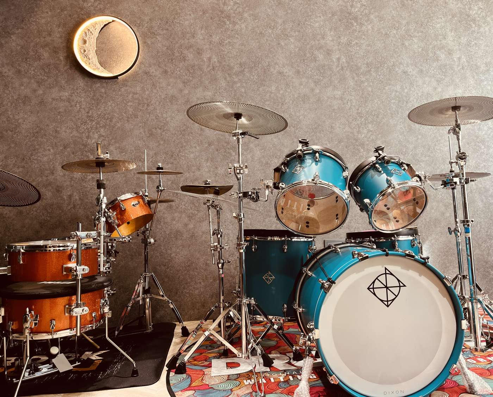
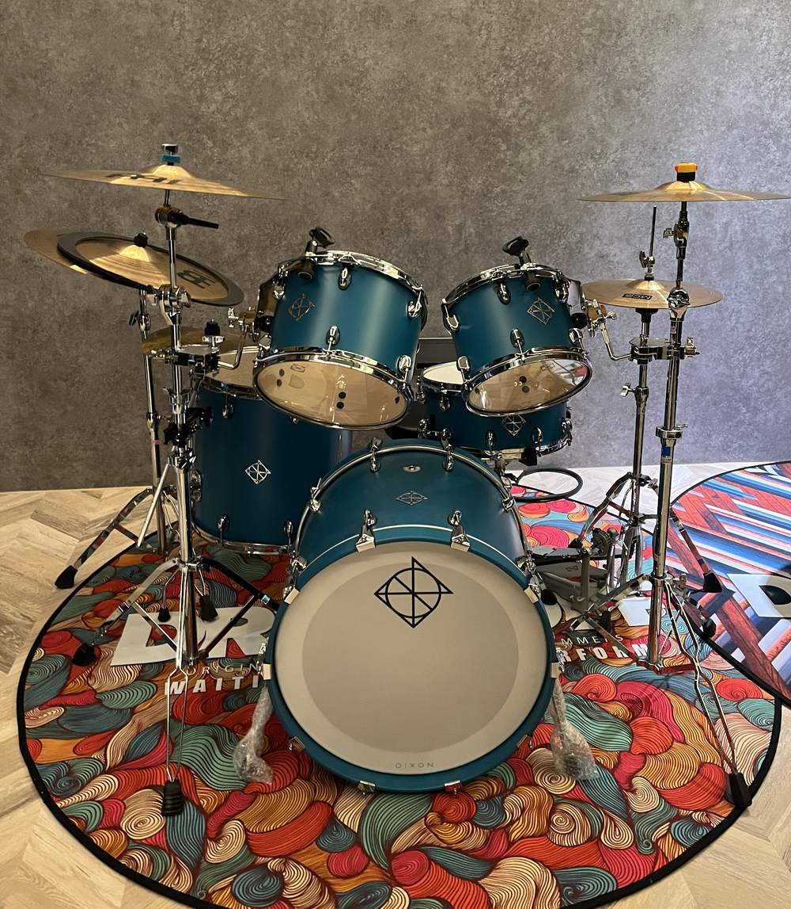
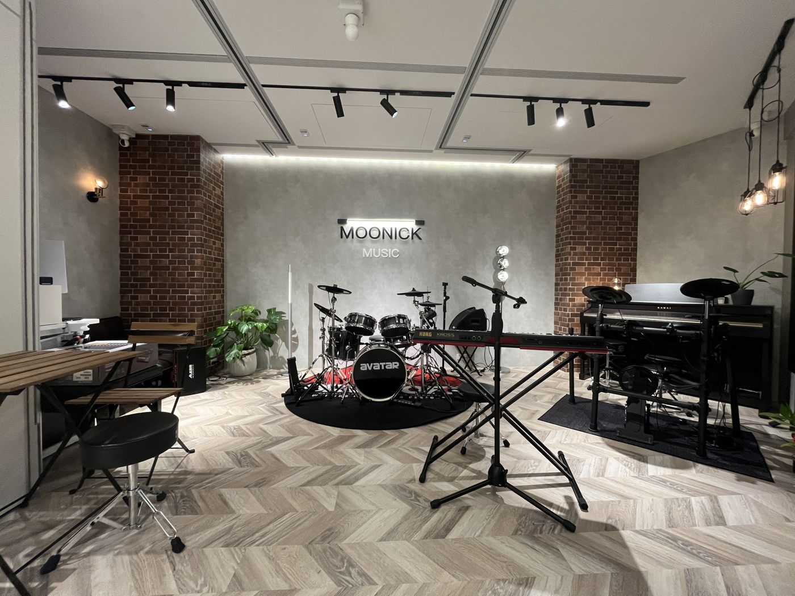
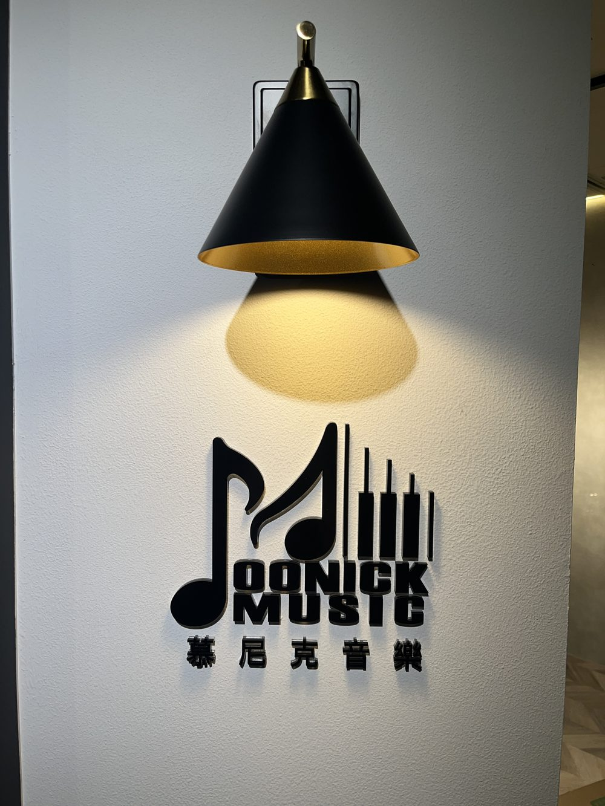
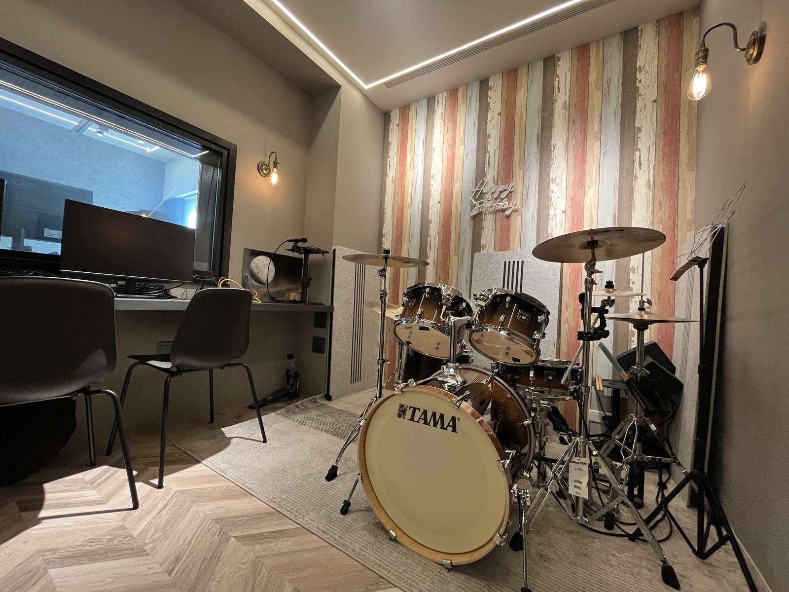
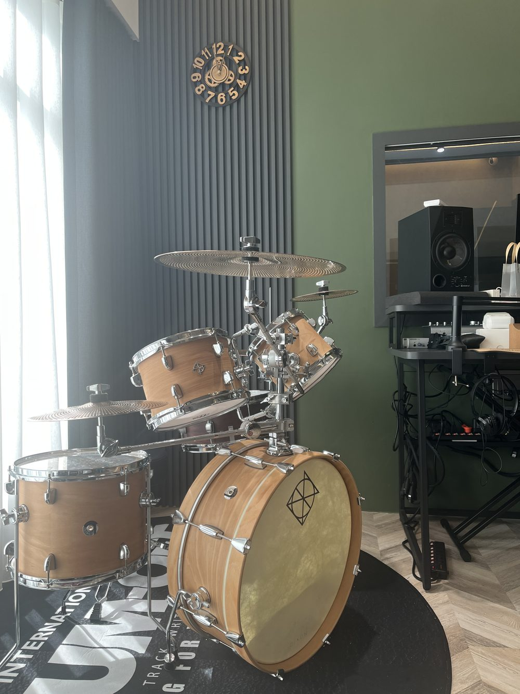

課程由經驗豐富的師資搭配專業軟體授課，各年齡層皆歡迎報名。慕尼克音樂板橋校區於 2026 年 1 月在板橋中正路、國光國小正對面正式開幕，是兒童、成人與樂齡都能上課的板橋音樂教室。位置鄰近 435 藝文特區與江翠重劃區，江子翠、新埔的家長下課順路就能接送，從新莊開車過來也很快。教室配備專業硬體：獨立隔音鼓房設有實體真鼓，每間教室皆配置錄音介面與監聽喇叭，鋼琴、吉他、歌唱與樂團課全面支援同步錄音；爵士鼓團班教室更配置三組實體真鼓與兩組輔助練習器材（五人滿班），還有可打通成大廳的排練空間。
我們的課程直接從你喜歡的歌開始，一期 12 堂、每堂 50 分鐘。想幫孩子找板橋才藝班，這裡有幼兒與國小兒童課程；大人也歡迎了解成人課程與樂齡專區。

板橋音樂教室課程介紹

板橋爵士鼓課
兒童・成人
板橋校區設有獨立隔音鼓房與三組真鼓團班教室（五人滿班），用真的爵士鼓上課，讓孩子與大人直接打出真鼓的力道、反彈與音色變化。
- 正確握棒、基本打點與穩定拍子
- 基礎輕重拍律動、跟著流行歌曲演奏
- 訓練手腳協調與專注力

板橋吉他課
兒童・成人
木吉他、電吉他都能學。不背枯燥的傳統教本，先挑一首你最想彈的歌，還沒買琴也能先用教室的琴上課。
- 常用和弦、順暢換和弦與右手刷法指法
- 看懂六線譜與和弦譜，培養穩定節奏
- 一期 12 堂完成自彈自唱或樂團合奏曲

板橋 Bass 電貝斯課
兒童・成人
Bass 是樂團裡連接節奏與旋律的靈魂低音，適合喜歡穩重律動、想進樂團合奏的孩子與大人。
- 右手撥弦音色控制與左手按弦指型基礎
- 聽懂大鼓拍點，和爵士鼓一起撐起整首歌的律動
- 跟著流行與搖滾歌曲彈出好聽的低音線條

板橋歌唱課
兒童・成人・樂齡
很愛唱歌卻常卡高音、唱幾句就喘？由音樂製作經驗豐富的老師帶你找對發聲位置。
- 腹式呼吸與氣息支撐，告別喉嚨乾緊用力
- 音準校準、咬字律動與真假音順暢轉換
- 完整唱好一首拿手歌，也能擔任樂團主唱
上課方式
個人班
一對一上課，老師完全配合你的程度、步調與想練的歌單安排進度，排課時間彈性。
團體班
和同年齡同伴或家人一起學，互相激勵，也能享受合奏的樂趣。放學後背著鼓棒、抱著吉他推門進來，跟同伴把一首歌合起來——想找能一起玩音樂的板橋才藝班，團體班是很好的起點。看板橋樂團班 ›
幼兒到成人零基礎都可以學
小小孩會先從好玩的節奏遊戲帶起——請先看幾歲學爵士鼓／準備度檢查表，確認孩子能不能開始上課；滿 4 歲以上也有小班制的「幼兒鋼琴團體班」（最新開班時段歡迎透過官方 LINE 詢問）。大人就算完全沒基礎、看不懂五線譜，從直覺的和弦譜開始也能一步步上手！上班族可參考成人課程，退休族想彈唱經典好歌歡迎前往樂齡專區。
上課時段與預約
每堂課 50 分鐘，一期 12 堂；依規定請假，每期可補課 3 次。週三到週日的下午到晚上都有開課，板橋才藝班也能排在放學後。最新時段請打手機 0939-239-219、市話 02-8965-2288，或加官方 LINE 詢問。非營業時間或老師帶學生演出時，市話可能無人接聽，請改撥手機。
教室環境｜隔音鼓房與練團大廳
校區內設有獨立隔音鼓房（配置 TAMA 20 吋爵士鼓，平時亦開放按小時租借練習），以及擺放三組實體真鼓與輔助練習器材的團班教室（五人滿班），讓學員上課都能實際敲擊真鼓。平日獨立上課的教室將活動隔間全部打通後，就能化身為寬敞的舞台大廳，供樂團合奏排練與成果演出使用。




師資介紹
板橋校區的老師皆具備豐富的現場演出、唱片製作與全國大賽指導經驗，從零基礎入門到全國比賽、英國 Rockschool 國際檢定，都有老師一路陪著練。比較板橋音樂教室推薦名單時，「老師是誰」常是家長最先想知道的事，下面就來認識板橋校區的五位老師。

小江老師｜江孟翰 Stevie Chiang
慕尼克音樂負責人・爵士鼓／吉他／樂團／歌唱／詞曲創作
慕尼克音樂負責人，專長爵士鼓、吉他、歌唱、樂團合奏與詞曲創作，在板橋校區除了親自帶課，也負責規劃各樂器的教學系統。曾任崇右影藝科技大學演藝系助理教授、莊敬高職表演藝術科兼任教師，以及武陵高中、內壢高中、振聲中學高中部吉他社指導老師，長期陪青少年組團、玩音樂。本身是累積超過 200 首作品的得獎創作人與音樂製作人：曾獲 2007 桃園歌謠節「青春鬥陣行」全國樂團創作競賽冠軍、2003 第一屆桃園歌謠節全國詞曲創作大賽亞軍、2017 台北市勞工重建處職業災害微電影詞曲創作賽暨演唱第一名〈肩膀〉、2018 舊愛新歡古典詩詞譜曲創作暨演唱競賽評審團特別獎〈煙鎖秦樓〉，並在 2018、2020、2022 年三度獲得古詞新律組進士獎；也參加過「南面而歌」、「臺南sing時代之歌」；也是大愛電視台《愛的路上我和你》主題曲〈鳥仔〉的詞曲作者。他指導的學生已拿下超過 30 座全國比賽冠軍，並有 8 位學生通過英國 Rockschool 國際爵士鼓檢定最高階 Grade 8；同時與太太 Candy 一起經營親子頻道「糖果先生 Candy & Husband」，擔任吉他手兼製作人。

小佑老師｜陳諺群
爵士鼓・吉他・Bass・Vocal・流行鍵盤
能同時指導爵士鼓、吉他、Bass、Vocal 和流行鍵盤的全方位音樂老師，2021 年起專任音樂教學，在板橋慕尼克帶領個人班、團體班與樂團班。熟悉流行、爵士、藍調與搖滾曲風，精通 Cubase、Guitar Pro 等專業編曲軟體，也能操作和調校現場音響，能帶學生看懂一首歌從練習、多軌錄音到站上舞台的完整過程。他是孩子準備比賽與國際檢定的好夥伴：2022–2023 年間，指導的學生在亞洲盃國際音樂大賽拿下爵士鼓幼童組第一名、樂人獎國際音樂大賽爵士鼓兒童 A 組第一名，並在 Drum Off Taiwan、卓越盃、樂人獎吉他組等比賽累積近 30 項名次與特優。上課時他會依學生的目標拆解每週進度，到了比賽與成果發表現場，還會親自用專業錄音與剪輯為孩子留下完整的演出影片。

安安老師｜張妤安
兒童與成人爵士鼓
活躍於台灣獨立音樂圈的職業鼓手，鼓齡 15 年，曾任知名樂團「猛虎巧克力」、「鯨魚號」鼓手，也從事音樂製作與詞曲創作。有超過百場海內外巡迴演出經驗，站過大港開唱、火球祭、簡單生活節等大型音樂祭舞台，參加過樂團選秀《一起聽團吧》，也曾與鄭宜農、高小糕、四枝筆等音樂人合作。她是板橋慕尼克兒童爵士鼓的主力老師，指導的學生曾獲扶輪公益盃高年級組冠軍、TMA 全國音樂大賽一年級冠軍、亞洲盃幼童組冠軍、鼓王鼓后爭霸賽幼童組亞軍、Drum Off Taiwan 全國爵士鼓大賽 C 組季軍。她擅長帶領肢體律動與音色開發，先讓孩子用身體感受節奏，再依每個孩子的程度親手改寫鼓譜；孩子比賽時她總會陪在舞台側邊，幫孩子穩住上台前的心情。

通哥老師
助理老師・電吉他／木吉他／貝斯／爵士鼓
通哥老師現任慕尼克助理老師，專長樂器涵蓋電吉他、木吉他、貝斯與爵士鼓。他過去曾參與管樂團打擊分部，並擔任高中熱音社指導老師，目前亦持續進修音樂治療領域。在曲風上，他擅長搖滾與重金屬風格，具備金屬吼腔演唱技巧，並熟悉 Logic Pro 編曲錄音軟體。教學時，通哥老師重視讓學生先用身體感受音樂律動，再一步步理解節奏、樂理與演奏技巧；課堂上鼓勵學生主動思考與探索，引導他們將自己的情緒與想法自然融入演奏之中。

劭奇老師｜陳劭奇
專任指導・爵士鼓
劭奇老師為慕尼克專任爵士鼓老師，教學對象涵蓋學齡前幼兒、國小學童至國高中青少年。他在學生時期即擔任高中與大學熱音社主力鼓手、社長與教學幹部，並曾參與管樂團打擊分部，同時也是自組樂團鼓手，累積了紮實的公開演出、音樂比賽與檢定實戰資歷。投入爵士鼓教學近三年來，持續帶領各年齡層學員準備音樂比賽、檢定考試與樂團合奏成果發表。
在課堂上，劭奇老師堅持「先理解、再熟練」的引導原則。當孩子遇到打點卡關或手腳協調問題時，他不會讓學生只是機械式地重複苦練，而是先幫孩子找出動作與拍子卡住的真正根源，再依每個人的性格與吸收步調因材施教。從個人基本功的建立，一路到與團員合奏練團、挑戰比賽與站上成果發表舞台，他都能一步步帶著孩子穩定發揮。
家長專欄
常見問題
老師，他回家到底要怎麼練？
每堂課後老師會在班群傳送示範影片、口訣或樂譜。孩子在家練習時，爸媽不用懂樂理，也不用當糾錯的評審，只要當最捧場的聽眾兼攝影師，每週挑一天幫孩子拍支 1 分鐘影片傳給老師，老師就會幫孩子看姿勢與拍子。
幾歲可以開始學樂器？
我們不只看年紀，更看孩子準備好了沒：聽到音樂會跟著動、能數到 10 並拍出簡單節奏、願意在椅子上坐滿 10 分鐘互動（4 歲以上可上幼兒鋼琴團體班）。請先看幾歲學爵士鼓／準備度檢查表，確認孩子能不能開始上課。不確定的話，歡迎加入官方 LINE，我們幫您看孩子適合從哪裡開始。
大人完全沒基礎也可以學嗎？
可以！兒童、成人與樂齡都能上課，爵士鼓、吉他、Bass、歌唱、鋼琴都有。大人不看五線譜也能從直覺的和弦譜與流行歌開始上手。
一堂課多久？怎麼預約時段？
一堂課 50 分鐘，一期 12 堂。最新開班時段與報名方式，請撥打手機 0939-239-219、市話 02-8965-2288，或加官方 LINE 詢問。非營業時間或老師帶學生演出時，市話可能無人接聽，請改撥手機。
請假可以補課嗎？
可以，依規定提前請假，一期（12 堂）可補課 3 次。
有成果發表會嗎？
有，我們會舉辦成果發表會與大型年度演出，讓學員站上真正的舞台演奏。
教室在哪裡？好停車嗎？
在新北市板橋區中正路 325 巷 47 號 1 樓，從麥當勞對面巷口轉入，就在國光國小正對面。公車 307 港尾站步行 3 分鐘；開車步行 2～4 分鐘內有 Times 中正路停車場與國光公園日月亭停車場。
交通與地址
新北市板橋區中正路 325 巷 47 號 1 樓（國光國小正對面）
上課時間
週三、週五 16:30–22:00；週四 14:00–22:00
週六、週日 13:00–22:00
週一、週二公休
週二可預約開課，有需要請先來電或 LINE 詢問。
交通
位在板橋中正路 325 巷（麥當勞對面巷口轉入，國光國小正對面），鄰近 435 藝文特區、江翠重劃區、江子翠與新埔，從新莊開車過來也很近。
公車 307 港尾站步行 3 分鐘。
捷運板橋站約 1.1 公里，出站騎 YouBike 約 5–7 分鐘。
停車：Times 中正路停車場走路約 2 分鐘，國光公園日月亭停車場走路約 4 分鐘。
聯絡我們
手機：0939-239-219（小江老師）
市話：02-8965-2288
非營業時間或老師帶學生演出時，市話可能無人接聽，請改撥手機。
Email：moonick.ntc@gmail.com
官方LINE：https://line.me/R/ti/p/@595zatgi
Threads：@moonickmusic.ntp
上過課覺得不錯，歡迎在 Google 留下評論，讓正在找板橋音樂教室推薦的家長參考。
線上報名在Google留下評論